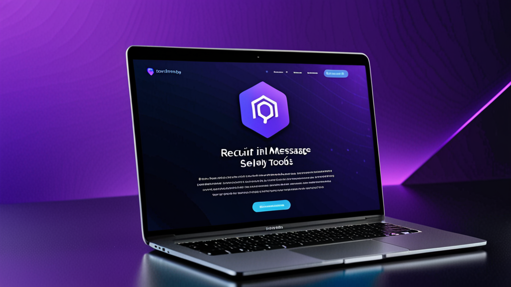

Best AI Reply Tools for Recruiting Messages: A Recruiter’s Guide to Smarter Outreach
If you’ve spent more than ten minutes typing a personalized LinkedIn message to a passive candidate, you know the pain. You want it to sound human, reference their specific experience, and include the right call to action — without accidentally pasting the wrong company name.
The best AI reply tools for recruiting messages solve this exact problem. They help you draft outreach that feels personal, not templated. But not all tools work the same way, and knowing how to use them effectively makes the difference between sounding like a robot and sounding like a recruiter who actually did their homework.
This guide covers what to look for in an AI recruiter assistant, how to use it without losing your voice, and practical tips to improve your response rates.
Why Recruiters Need a Better Way to Write Messages
Recruiters send dozens — sometimes hundreds — of messages every week. Each one requires context switching: reviewing a candidate’s profile, checking the job description, and crafting a message that stands out in a crowded inbox.
The result? Many recruiters fall back on generic templates. Candidates spot these instantly. According to LinkedIn data, response rates for InMail average around 20-25% — and that number drops significantly when the message feels mass-produced.
A recruiter message generator doesn’t just save time. It helps you maintain quality across volume. When you can generate a draft that pulls in the candidate’s role, industry, and a relevant detail from their profile, you’re more likely to get a reply.
What Makes the Best AI Reply Tools for Recruiting Messages?
Not every AI writing tool is built for recruiting. Before you pick one, here’s what to look for:
1. Context Awareness
The tool should understand who you are, who the candidate is, and what role you’re recruiting for. Generic AI chatbots that don’t take context will produce vague, unusable drafts.
2. Tone Control
You need the ability to adjust tone — from professional and formal to casual and direct. A candidate outreach tool that only writes in one style won’t work across different roles and industries.
3. Platform Integration
The best tools work where you already operate: LinkedIn Recruiter, Greenhouse, Lever, Workday. Having to copy-paste between tabs defeats the purpose of automation.
4. Privacy and Control
You should never have to worry about your API key being exposed or your messages being auto-sent. The best AI reply tools for recruiting messages give you full control over what gets sent and keep your data local.
How to Use an AI Recruiter Assistant Without Sounding Like AI
Even the best tool can produce stiff output if you don’t guide it. Here’s how to maintain a human touch:
Start with a Strong Prompt
Don’t just hit “generate.” Feed the tool specific details:
- Candidate’s current role and company
- A specific project or achievement from their profile
- Why this role is relevant to their career path
Example prompt:
“Write a short LinkedIn message to a Senior Product Manager at Spotify. Mention their work on feature personalization. The role is for a Product Lead at a Series B fintech startup. Tone: friendly but professional.”
Edit the Output
Always read the draft before sending. Remove any phrases that feel unnatural. Add a personal question or observation that only you would notice. The AI is a starting point — your voice finishes the message.
Use Different Templates for Different Stages
A cold outreach message should not sound like a rejection letter. An AI recruiter assistant should let you switch between:
- Initial outreach
- Follow-up (if no response)
- Interview invitation
- Rejection or update
Each stage requires a different tone and level of detail.
Practical Examples: Before and After AI Assistance
Let’s look at real scenarios where an AI tool improves the message.
Cold Outreach
Before (generic template):
“Hi [Name], I came across your profile and think you’d be a great fit for a role at our company. Let me know if you’re interested.”
After (with AI recruiter assistant):
“Hi Sarah, your work on user retention at HubSpot caught my eye — especially the campaign that reduced churn by 12%. We’re building a similar growth team at a Series A company and could use your expertise. Open to a quick chat this week?”
The second message references specific work, shows research, and asks a clear question. That’s the difference between a delete and a reply.
Follow-Up
Before:
“Just following up on my previous message. Let me know if you’re interested.”
After:
“Hey Sarah — I know you’re busy, so I’ll keep this short. If the timing isn’t right, no worries at all. But if you’re curious about the role, I’d love to share more details. Either way, appreciate you considering it.”
This follow-up acknowledges the candidate’s time and removes pressure, which often leads to a response.
Tips for Better Candidate Response Rates
Using the best AI reply tools for recruiting messages is one part of the equation. Here are additional strategies to improve your outreach:
Personalize Beyond the Profile
Mention something from their recent post, a mutual connection, or a conference they attended. AI can’t always capture these nuances — add them manually.
Keep It Short
Candidates read messages on mobile. Aim for 3-5 sentences max. If your AI draft is longer, trim it.
Include a Low-Friction Ask
Instead of “Can we schedule a call?” try “Happy to share the job description if you’re curious.” Lower commitment = higher response.
Use a Clear Subject Line (for Email)
If you’re using an ATS like Greenhouse or Lever, your message might land in their inbox. Use a subject line like “Quick question about your experience at [Company]” — not “Job opportunity.”
Why Recruiting Automation Should Still Feel Human
Some recruiters worry that using AI makes them less authentic. The opposite is true. When you automate the repetitive parts of writing, you free up mental energy for the parts that matter: reading the candidate’s profile, thinking about their fit, and building rapport.
A recruiting automation tool should handle the typing, not the thinking. The best tools respect that boundary.
Choosing the Right Tool for Your Workflow
If you’re evaluating options, consider how the tool fits into your daily routine. Do you spend most of your time in LinkedIn Recruiter? Or do you live inside an ATS like Workday or Lever? The best AI reply tools for recruiting messages integrate seamlessly into your existing workflow, not as a separate app you have to remember to open.
Also consider security. If your organization handles sensitive candidate data, you need a tool that processes information locally and doesn’t store messages on external servers. Privacy-first design matters more than flashy features.
One tool that checks these boxes is RecruitReply AI — it works inside LinkedIn Recruiter and major ATS platforms, uses on-device AI, and never auto-sends messages. But regardless of which tool you choose, the principles in this guide apply.
Final Thoughts
The best AI reply tools for recruiting messages aren’t about replacing recruiters. They’re about removing friction. When you can generate a personalized, human-sounding draft in seconds, you send better messages, more consistently, and with less effort.
That leads to higher response rates, better candidate relationships, and more time for the strategic parts of recruiting that actually matter.
If you’re ready to try a tool that respects your workflow and your candidates’ privacy, check out RecruitReply AI. It’s built for recruiters who want to write better messages — faster — without losing their voice.